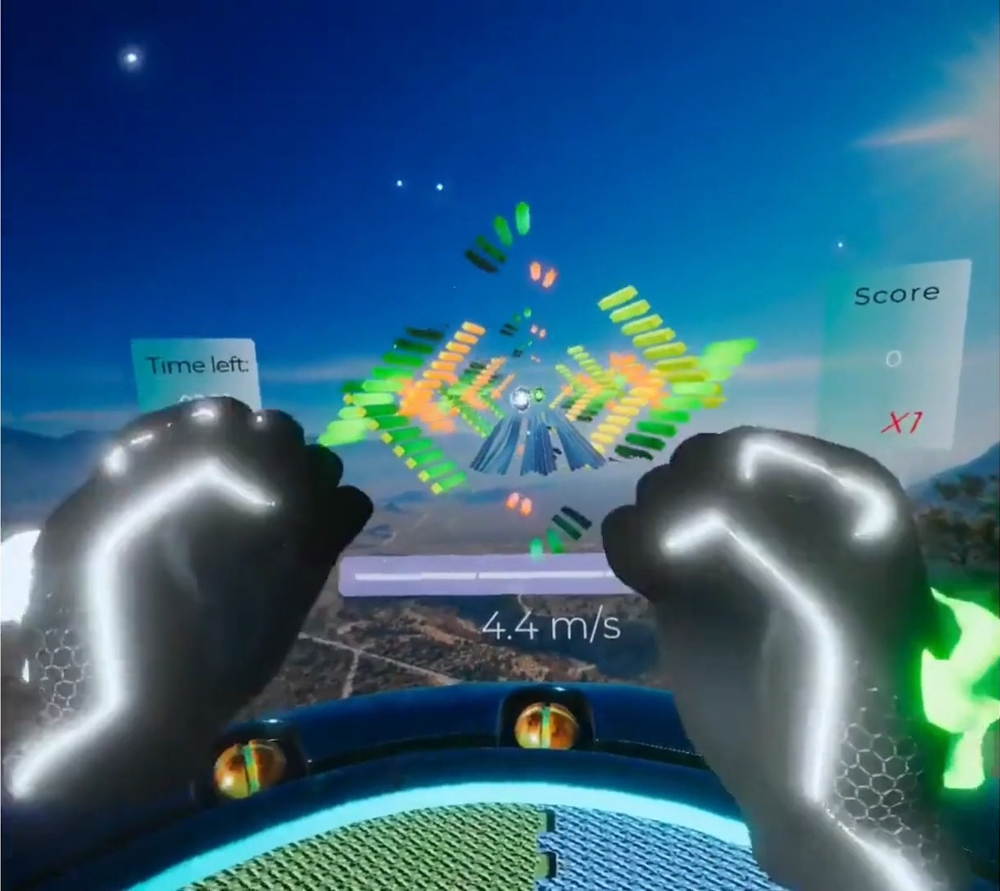

Wonder! - Metaverse fitness app
This is the project I worked on during my time at the Wonder XR startup, and their sole product.
Wonder! is a VR gamified fitness platform. It is available for Meta Quest 2.
Its goal is to connect both content creators and users through the Metaverse, while still providing a fun experience that makes working out easier.
It would allow users and creators to create their own routines for the app and market them
My role in this project was to improve, optimize and refactor part of the existing codebase, while ensuring the experience remained stable for a few thousand of users
Part of these modifications were:
- Optimization to meet the frame-per-seconds requirements for the Oculus Store
- UI refactoring to ease the introduction of new features
- Partial refactoring of the game code to bring it to better coding practices
I also implemented new features for the game
- User profiles using information from Meta user API
- Playlist creations
- Directional punch detection
- Setup Localization system using Unity tools
- Basic AI for a non-human adversary to reduce matchmaking wait times in multiplayer
- UI management and feedback frameworks
The fate of the start-up and the current state of the game are uknown to me.